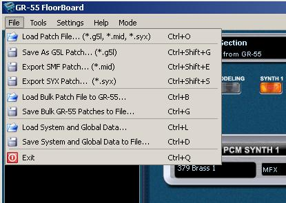

GR-55
FloorBoard Editor
Help
Index
Working with the File Menu
The File menu provides multiple ways of saving and restoring patch and global data to and from the GR-55.
You can also import and export patches to and from the GR-55. There are special areas of the VGuitarForums for GR-55 Guitar Mode Patches and GR-55 Bass Mode Patches, where you can share and download (SMF) patch
files with and from other GR-55 users. You can also install the VG-99
editor and open its patches, view the patch parameters, and manually
import settings to emulate a VG-99 patch on the GR-55.

IMPORTANT: FILE TYPE DESCRIPTIONS
CAUTION! You should only load patches to a GR-55 that are intended for the GR-55.
There are millions of *.mid and *.syx files around the web that contain songs, patches
for other MIDI devices, and all sorts of other information. Loading a random *.mid
file NOT intended for the GR-55 to a GR-55 might cause problems.
There are four
file types that can be saved from and loaded to the GR-55, with various capabilities and system impact. - G5L
- A GR-55 specific file format that includes system configuration, such
as GK settings and other parameters specific to your GR-55 and
different from the settings in another user's GR-55.
Use caution when loading G5L files from another user. It may overwrite your GK and other important settings. - SMF - The Standard MIDI Format, in the case of a GR-55, this is a *.mid file. This is the format used most on the VGuitarForum patch sharing areas for the GR-55.
- SYX
- SYstem eXclusive files that contain information for a specific
electronic instrument, like a GR-55 or a VG-99, etc. A *.syx file can contain as little as an
instruction to increase the volume or activate a note, or it can
include an entire system configuration or even a software upgrade. You
should only use sysex files if you are certain what it will do to your
equipment.
- SVD
- This
is a Roland system backup file format used by the GR-55 and possibly
other Roland equipment. When you backup the GR-55
to an internal USB port inserted thumb drive, an SVD format file is
saved, from which you can recover the entire system settings and
patches. You can copy the SVD files to a hard drive, burn a copy to
VD/DVD, attach them to email, etc, for safe keeping.
What are the differences in how you use these file types?
- A single patch
file includes the parameters for one memory location (or patch) in the
GR-55. The first four menu items under the File menu are for
saving, exporting or loading single patches without the system and
global data. If you want to tray a patch crated by another user, load
it using the first File menu selection, "Load patch file".
This way you won't harm your system or global settings. Also, if
you want to share a patch with other GR-55 users, save it as a patch
file.
- Bulk patch files
contain similar information but for multiple patches, up to the entire
patch memory of the GR-55, or 297 patches. The fifth and sixth items
under the File menu are for saving and loading bulk patches, where you can select the patch number range to save and load.
- System and Global Data
files include the GK settings, global assigns, and the other system
level settings that are unique to your GR-55, different from mine or
any other. In theory, if you lost your GR-55 and bought another, you
could load the System and Global Data
and then plug in your controller and pick up right where you left off,
or at least very close. It is a very good practice to make a complete
backup regularly, or at least after making major changes to your
settings, just in case you ever need to restore them. The last two File menu items before the Exit command are for saving and loading System and Global Data
files from and to the GR-55.
IMPORTANT: NEVER load System and Global Data
files from another GR-55, or even your own, unless you want to overwrite your current system and global level parameters.
Load Patch File (*.g5l, *.mid, *.syx)
- Use
this menu selection to load a patch file from the computer to the GR-55
FloorBoard Editor for transfer to the GR-55. A file navigation panel
opens from where you can select the file to open. File types *.g5l, *.mid, and *.syx are supported.
Save As G5L Patch (*.g5l)
- Use this menu selection to save the current patch in the GR-55 FloorBoard Editor to a *.g5l file on the computer.
Export SMF Patch (*.mid)
- Use this menu selection to save the current patch in the GR-55 FloorBoard Editor to a *.mid file on the computer.
Export SYX Patch (*.syx)
- Use this menu selection to save the current patch in the GR-55 FloorBoard Editor to a *.syx file on the computer.
Load Bulk Patch to GR-55 (*.g5l, *.mid, *.syx)
- Use this menu selection to load a file from the computer containing a group of patches to the GR-55. File types *.g5l, *.mid, *.syx are supported and you can specify which Bank and Patch numbers.
Save Bulk Patch to File (*.g5l, *.mid, *.syx)
- Use this menu selection to save a file containing a
group of patches from the GR-55 to the computer. File types *.g5l, *.mid, *.syx are
supported and you can specify which Bank and Patch numbers.
Load System and Global Data
- Use
this menu selection to load a GR-55 System Data file containing GR-55
System and Global data from a file on the computer to the
GR-55. File type *.GR55_system_syx is supported.
Save System and Global Data
- Use this menu selection to save a GR-55 System Data file containing
GR-55 System and Global data from the GR-55 to a file on the computer. File type *.GR55_system_syx is supported.